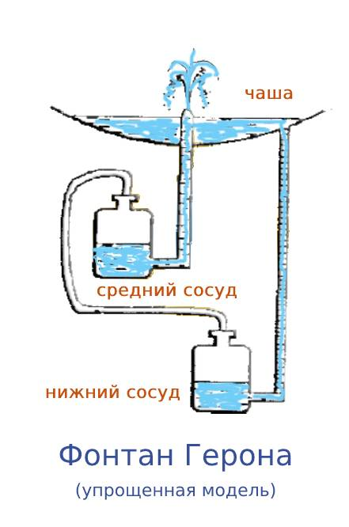

Интерактивное изучение и сборка древнего устройства
Уровень жидкости в соединённых сосудах всегда одинаков
В сообщающихся сосудах давление на одном уровне должно быть одинаковым. Поэтому уровень жидкости устанавливается на одной высоте, независимо от формы сосудов.
Фонтан Герона использует три сосуда, соединённых трубками. Вода перетекает из верхнего в нижний, вытесняя воздух, который поднимает воду из среднего сосуда.
Давление зависит от высоты столба жидкости — чем выше, тем дальше летит струя
Давление на боковой стенке сосуда создаёт скорость истечения жидкости. Чем выше столб воды над отверстием — тем больше скорость и дальность полёта струи. Это закон Торричелли.
В фонтане Герона высота столба воды в верхнем сосуде определяет давление, которое вытесняет воздух из нижнего сосуда. Этот воздух поднимает воду из среднего сосуда на высоту, близкую к высоте падения.
Вода, втекая в закрытый сосуд, выталкивает воздух и поднимает поршень
Когда вода втекает в закрытый сосуд, она занимает место воздуха. Воздух сжимается и создаёт давление, которое может двигать поршень или перемещаться по трубке в другой сосуд.
Это ключевой механизм фонтана Герона: вода из верхнего сосуда стекает в нижний, вытесняя воздух. Этот воздух по трубке поднимается в средний сосуд и выдавливает воду вверх — так работает фонтан!
Пошаговая инструкция по сборке работающего фонтана

Принцип работы: Фонтан Герона — это устройство, которое создаёт струю воды без насоса, используя только гидростатическое давление и вытеснение воздуха. Состоит из трёх сосудов:
Вода из верхнего сосуда стекает в нижний, вытесняя воздух. Воздух по трубке поднимается в средний сосуд и создаёт давление, которое выдавливает воду из среднего сосуда вверх — получается фонтан!
Вставьте трубки в отверстия и загерметизируйте пластилином или горячим клеем:
Фонтан Герона работает благодаря трём физическим принципам:
Высота фонтана примерно равна перепаду высот между верхним и нижним сосудами (минус потери на трение в трубках).